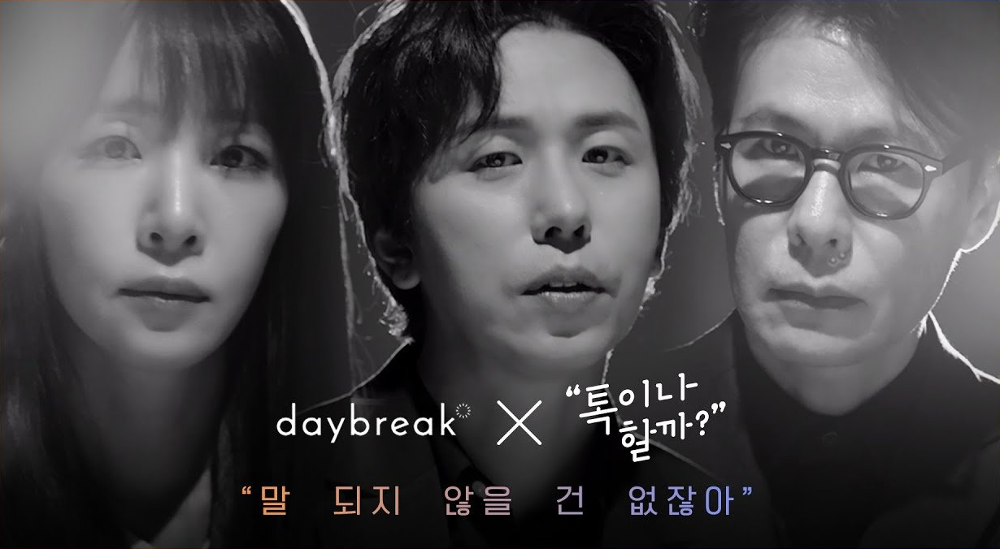
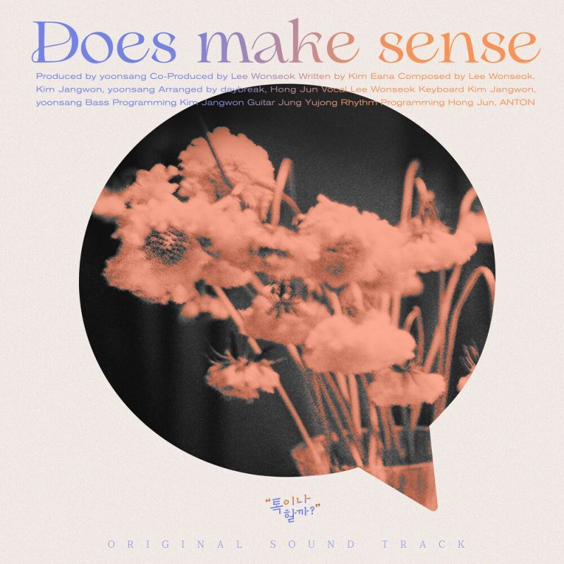

안녕하세요 라보엠입니다.
오늘은 작곡에 윤상, 작사에 김이나, 노래에 데이브레이크 (Feat. 헤이즈)의 노래 2곡을 소개해드리겠습니다.
말이 안 되잖아 - 데이브레이크, 헤이즈
말이 안 되잖아
Produced by 윤상
Written by 김이나, 헤이즈
Composed by 윤상, 이원석, 김장원
Arranged by 데이브레이크, 홍준
윤상 작곡, 김이나 작사, 데이브레이크와 헤이즈가 노래 한다니,
말이 안되는 조합입니다. 이 조합이면 좋은 노래가 안나올 수가 없겠죠
무슨 말을 할까 누가 먼저 말할까
어쩌면 모든 게 계절 탓은 아닐까
내가 느끼는 걸 너도 느끼는 걸
모를리 없는 슬픈 우리
말이 안 되잖아 어울리질 않잖아
우리와 이별을 한 줄에 쓴다는 게
깜박이던 별 하나가 보이질 않아
애틋했던 이름도, 체온도, 입술도
노래의 내용은 연인과 헤어진 사람의 현실 부정 이야기입니다.
이별을 해보신 분들은 이 노래의 감정을 깊이 느낄 것 같습니다.
뮤비 처음 봤을 때 결말이 조금 충격적이어서 심장이 약한 분은 노래만 들으시길 바랍니다...
말이 안되잖아 - 가사
[이원석]
달라 보였어
문득 올려본 그 별들이
이미 사라진 채로 빛나고 있는 외로움
[헤이즈]
달리 불었어
가슴 가득 품던 바람도
전부 지나갈 뿐이라고 여긴 아무것도 없다고
무슨 말을 할까
누가 먼저 말할까
어쩌면 모든 게
계절 탓은 아닐까
내가 느끼는 걸 너도 느끼는 걸
모를리 없는 슬픈 우리
말이 안 되잖아
어울리질 않잖아
우리와 이별을
한 줄에 쓴다는 게
깜박이던 별 하나가 보이질 않아
애틋했던 이름도 체온도 입술도
[헤이즈]
별수 없었어
설렘 뒤의 텅 빈 시간을
특별하지 못한걸
인정하기 싫은데
[이원석]
참 고마웠다고
말하려다 삼킨 순간들
끝내기엔 아쉽고
머물 이유도 없는
초라한 틈에 선 두 사람
무슨 말을 할까
누가 먼저 말할까
어쩌면 모든 게
계절 탓은 아닐까
내가 느끼는 걸 너도 느끼는 걸
모를리 없는 슬픈 우리
말이 안 되잖아
어울리질 않잖아
우리와 이별을
한 줄에 쓴다는 게
깜박이던 별 하나가 보이질 않아
애틋했던 이름도 체온도 입술도
Br.
결국 서롤 떠올리겠지
다른 사랑 하기 쉽지 않겠지
많이 그리워하고
실컷 울어보기도 하면
다시 돌아올 수 있을까
말이 안 되잖아
어울리질 않잖아
우리와 이별을
한 줄에 쓴다는 게
어쩌면 오래전 끝나버린 얘기
아무리 애써 이어봐도
말이 안 되잖아
설득력이 없잖아
우리와 이별은
앞뒤가 안 맞잖아
헝클어진 발걸음을 맞춰보아도
멀어져가잖아
말이 안 되잖아
빛을 잃은 새벽달은 애써보아도
사라져가잖아
이 노래가 인기가 있었는지 얼마 후 같은 조합의 두번째 노래가 나옵니다.
말 되지 않을 건 없잖아 - daybreak 김이나 윤상
말 되지 않을 건 없잖아
Produced by 윤상, 이원석
Written by 김이나
Composed by 이원석 김장원 윤상
Arranged by 데이브레이크(이원석 김선일 김장원 정유종), 홍준
우리 삶은 늘 모순으로 가득차 있습니다. 연인과의 이별이 말이 안된다고 현실 부정하던 사람도 결국 말 되지 않을 건 없다며 체념합니다.
그럴듯한 풍경 내 모습 내 말들
또 겉옷 같은 얼굴 표정과 습관들
다 지워버리면
사실 이렇게 여전히
그럴듯한 풍경 내 모습 내 말들
꽤 어른스런 몸짓 또 말투 약속들
다 우습지 않니
우린 어쩌면 여전히
말 되지 않을 건 없잖아 - 가사
1.
난 애쓰지 않고 흐르는 대로 살기로 했어
넌 머쓱할 만큼 잊혀져갔어
난 그런 거라 믿었어
말 되지 않을 건 없잖아
시간이 모든 걸 다 말이 되게 하니까
아무런 준비도 없이
하필 찬란한 날에 네 생각이 왜
그럴듯한 풍경 내 모습 내 말들
또 겉옷 같은 얼굴 표정과 습관들
다 지워버리면
사실 이렇게 여전히
그럴듯한 풍경 내 모습 내 말들
꽤 어른스런 몸짓 또 말투 약속들
다 우습지 않니
우린 어쩌면 여전히
2.
난 애쓰지 않고 흐르는 대로 살기로 했어
다 지울 순 없는 흔적으로
널 내 어딘가에 두고서
<간주>
글자로만 남은 얘기들
소리 나지 않게 저 아래 남겨진 것들
손끝으로 밀어도 사라지지 않는
저 끝 한 칸의 너
네가 섞인 풍경 내 모습 내 말들
또 너를 닮은 얼굴 표정 과 습관들
다 지우려 해도
사실 이렇게 여전히
불현듯 한 상상 그 헛된 생각들
돌릴 수 없는 것과 남겨진 기억들
참 우습지 않니
나는 어쩌면 여전히
톡이나 할까 - 말 되지 않을건 없잖아
김이나님의 유튜브 채널 [톡이나 할까]에서 이 노래를 가지고 각자가 작업하는 걸 보여주는데 프로들이 작업하는 모습이 경이롭습니다.
이 노래 가사가 20분만에 나왔다구요? 말이 안되잖아..
김이나님은 예전에 궁ost '사랑인가요' 가사도 정말 40분만에 썼다고 하던데, 대단합니다.
다음에도 좋은 이야기가 담긴 노래들로 다시 찾아오겠습니다.

